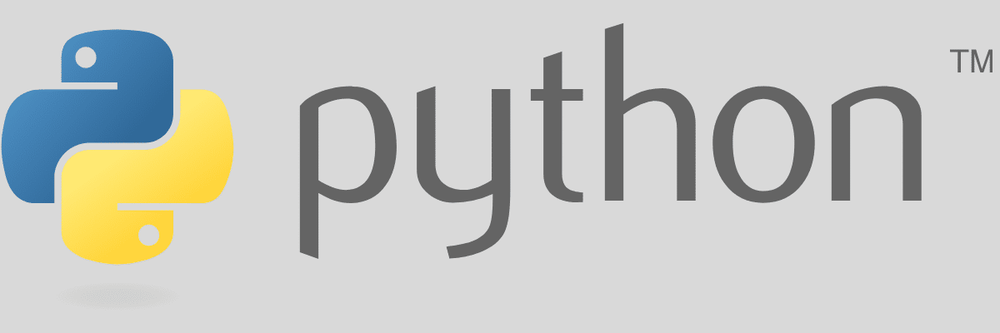

Featured Projects

Billionaires Analysis
Conducted a comprehensive analysis of billionaires' wealth distribution, industries, and geographic trends. This project provides insights into global wealth patterns and influential sectors.
Python
MySQL

Data Visualization
Created interactive dashboards to visualize data insights and trends. Utilized Power BI for effective data representation and analysis.
MySQL
Power BI
Backend Development
Developed backend services using Python and Postman to analyze billionaires by age group, self-made status (True/False), and country. Implemented functionalities for registering new billionaires, deleting records by ID, and managing data efficiently.
Python
Postman